Operator
Without criteria, every HVAC decision relies on intuition
Small business owners make HVAC decisions multiple times a day. But the system never tells them when to adjust, what to base it on, or what will happen after. This project gives them the information they need to decide — not just the controls to act.
Overview
Project Summary
Transforming intuition-driven HVAC management into a predictable, decision-ready structure
This project started with a question from my teammate: "Why do people adjust their HVAC systems on intuition — without any clear criteria?" We considered who this problem should be solved for, and decided to target small business owners rather than residential users.
Running my own store, I kept adjusting the HVAC — but always based on intuition, with no clear criteria to guide me. That experience aligned directly with the problem. We concluded that HVAC isn't just about control — it's about a structure where making a judgment is inherently difficult.
In a context where too many variables make it hard for users to judge on their own, we shifted the approach: the system proposes the optimal choice first, and the user simply reviews and approves.
Approach
Discover
Small Business Owners Are Decision-Makers Stuck Without Decision Support
Secondary Research
Small business owners adjust their HVAC systems based on intuition and experience — without any clear criteria
Analysis of user voices revealed that operators were repeatedly adjusting HVAC temperature and modes without any clear criteria. Categorizing review and community data showed an ongoing conflict between comfort and cost.
Insight
The problem wasn't simple discomfort — it was a structure that required users to make repeated HVAC decisions without any criteria to judge by
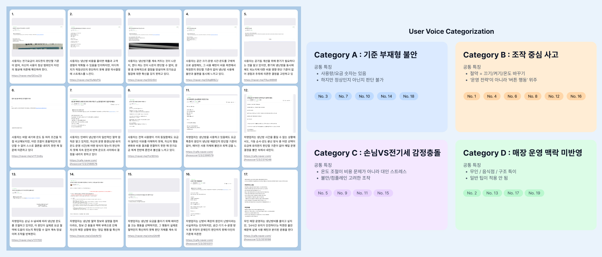
Primary Research
Small business owners make repeated HVAC adjustments, but without knowing the outcome of each decision, they keep repeating the same choices
Interviews into the real-world context of in-store HVAC management showed that operators were constantly adjusting temperature and modes based on store conditions. But since they had no way of knowing how each decision affected comfort and cost, they kept repeating the same choices.
Insight
HVAC decision-making was happening — but the process was never learned from or accumulated
Insight
Because outcomes are unpredictable, a cycle of intuition → adjustment → repetition forms


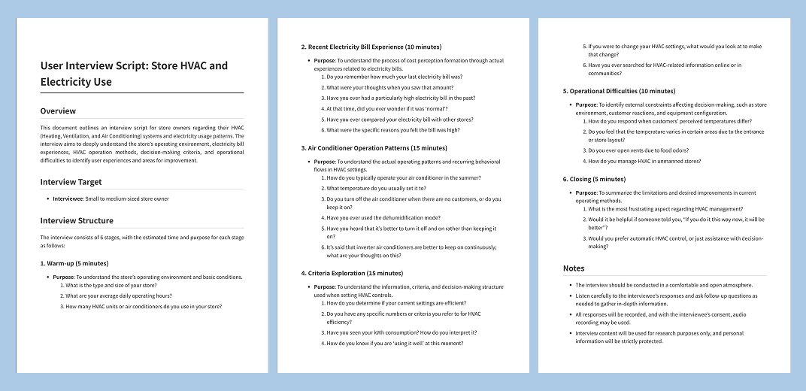
Analysis
The same difficulty appeared across every interview — not how to control, but how to decide
I analyzed the interview data using affinity mapping and thematic analysis. The issues weren't scattered — they kept pointing to the same place. Small business owners didn't struggle with operating the system. They struggled with deciding: when to adjust, how much, and how to balance comfort against energy costs — without any clear criteria.
Insight
Small business owners want to balance comfort and cost — but there's no criteria to do it with
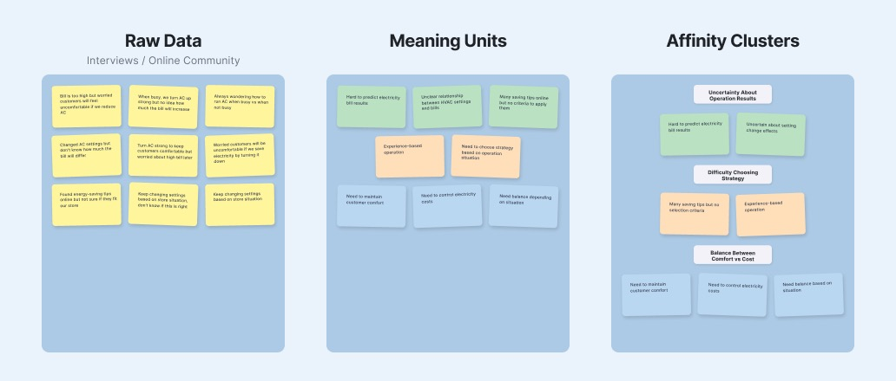
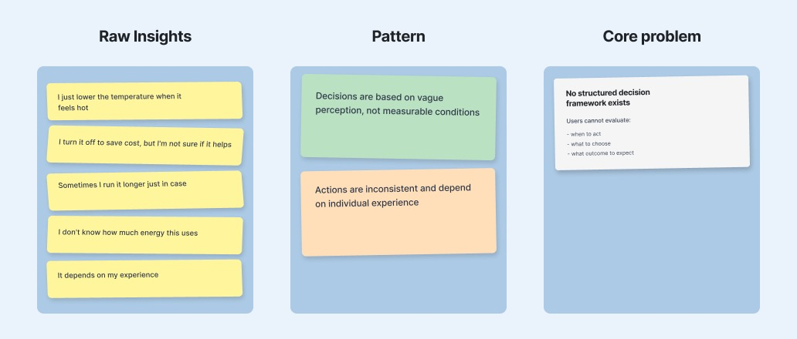
Context Research
HVAC electricity costs vary by time and conditions — but operators can't understand the structure well enough to use it as a decision criterion
Interviews confirmed that cost was a key variable, prompting us to analyze the electricity pricing structure. Energy rates vary significantly by time of day and usage conditions — but the structure is too complex to intuitively understand.
Insight
Operators did consider cost — but since they couldn't see how each decision affected their actual bill, cost functioned as after-the-fact information rather than a decision criterion
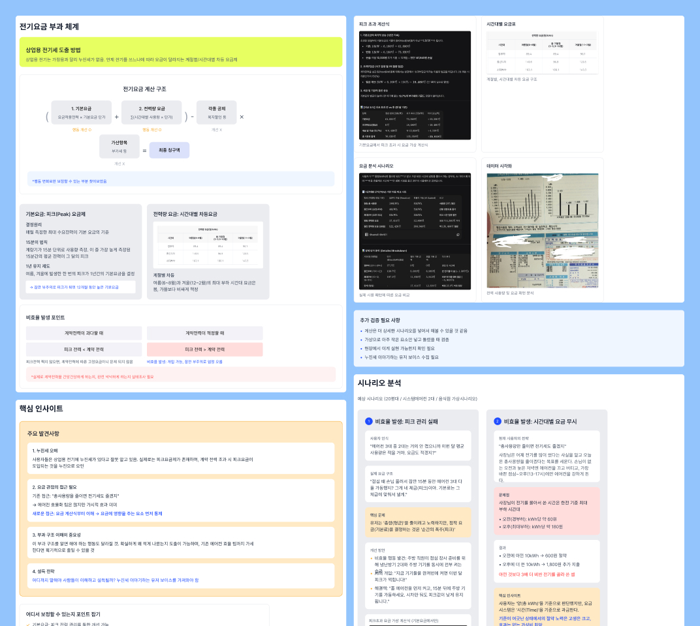
Competitor Analysis
Existing HVAC (Heating, Ventilation, and Air Conditioning) and EMS (Energy Management System) solutions offer control — but provide no criteria for deciding what to choose
Analysis of existing systems showed that users could adjust temperature and mode directly and review energy usage data — but since there was no way to see what each choice would result in, they were left to judge on their own.
Insight
Data is provided — but because the link between choice and outcome is missing, existing systems leave users repeating a cycle of trial and confirmation rather than making informed decisions
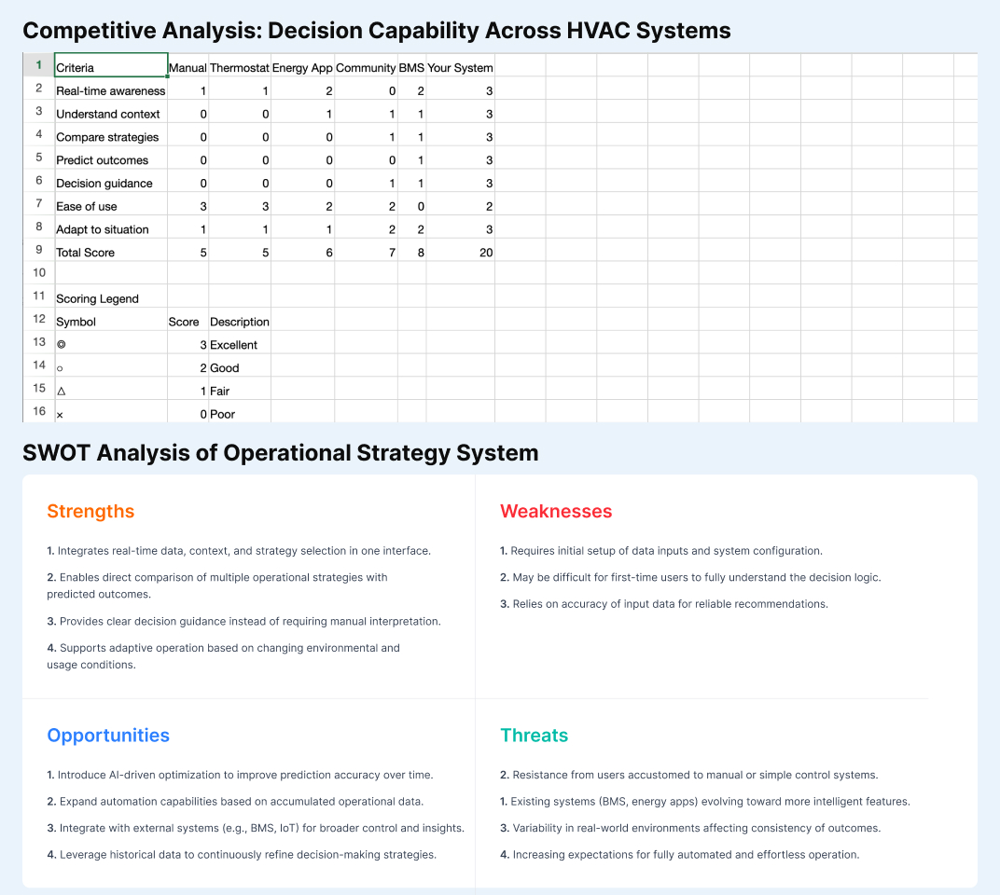
Define
The Problem Is Not Missing Controls — It's Missing Criteria
Problem Definition
Small business owners can control their HVAC systems — but without knowing the outcome of each choice, they cannot make a genuine judgment.
Because they can't see how each decision affects cost and comfort, users are unable to compare options — and end up repeating adjustments instead.
Root Cause Analysis
The system doesn't connect choices to their outcomes in comfort and cost — making comparison and informed judgment impossible.
Unable to predict outcomes, operators fall back on intuition and keep repeating the same adjustments.
Persona & User Journey
Journey analysis showed that operators continuously adjusted HVAC temperature and mode while accounting for outdoor temperature, store conditions, and customer count. During peak hours especially, there was little time to think through decisions — leading to quick, intuition-based adjustments.
Insight
Under time pressure, deliberate judgment gives way to immediate, reactive adjustments
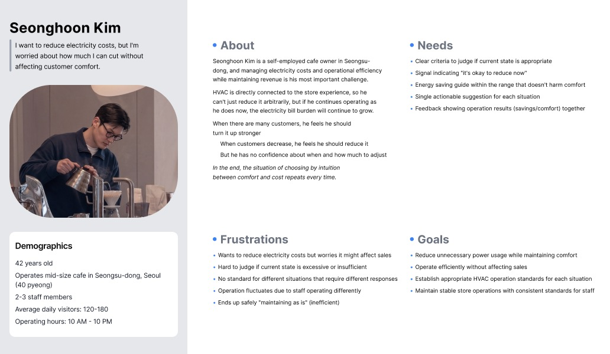
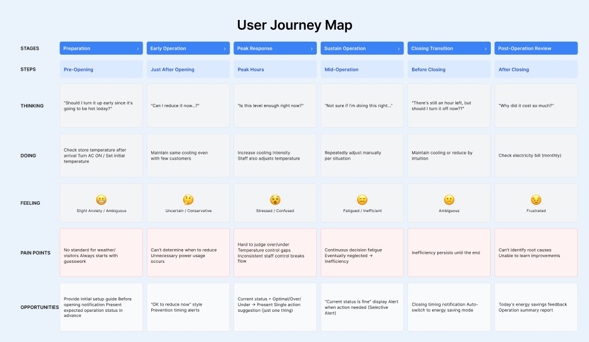
Problem Statement
Small Business Owners Need to Decide — Not Just Adjust
Every day, small business owners manage the trade-off between comfort and cost. They make HVAC decisions repeatedly, in conditions that keep changing. Without criteria or feedback, they rely on intuition. The result: unstable, inconsistent, exhausting decisions.
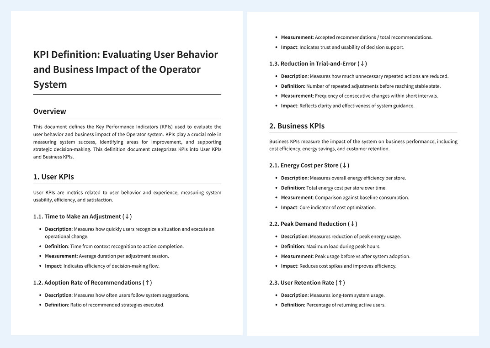
Ideate
Show What to Do Now — and What Will Happen
Solution Direction
Rather than showing HVAC data for users to interpret, the system makes the judgment first — and the user simply approves.
Building on the problem definition, we designed a structure that treats data not as raw information, but as a computed input — calculating the outcome of each option in terms of comfort and cost, then presenting a single optimal choice.
Core
The user doesn't make the judgment — the system does. The user only confirms.
Mind Mapping & Functional
HVAC decisions involve multiple factors simultaneously — outdoor environment, store conditions, cost — making it impossible to judge by any single criterion.
We mapped all the variables that influence HVAC operation and structured how each affects comfort and cost. From this, we designed a functional architecture that considers multiple variables at once and connects them into a single judgment.
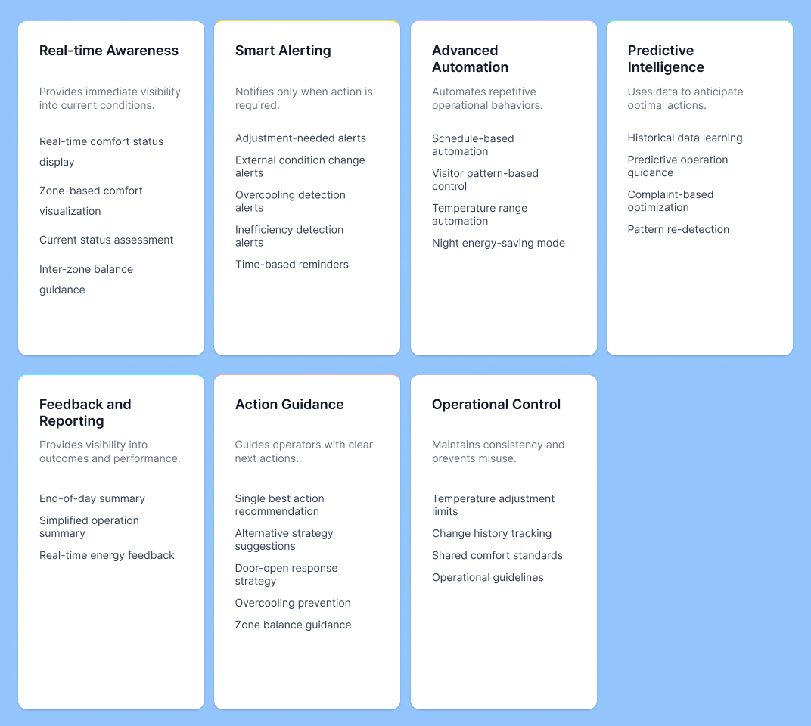
Scenario & Prioritization
Based on real store operation scenarios, we defined only the features users truly needed as the MVP.
We analyzed the user journey to identify the key situations when HVAC adjustments occur: peak customer hours, sudden changes in outdoor temperature, and high electricity rate periods. Features were defined and prioritized based on the actions required in each scenario.
Core
Not every possible feature — only those directly needed for real decision-making were included in the MVP
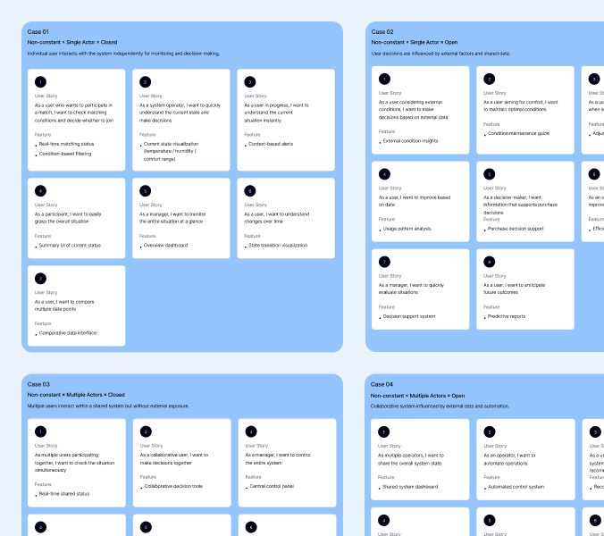
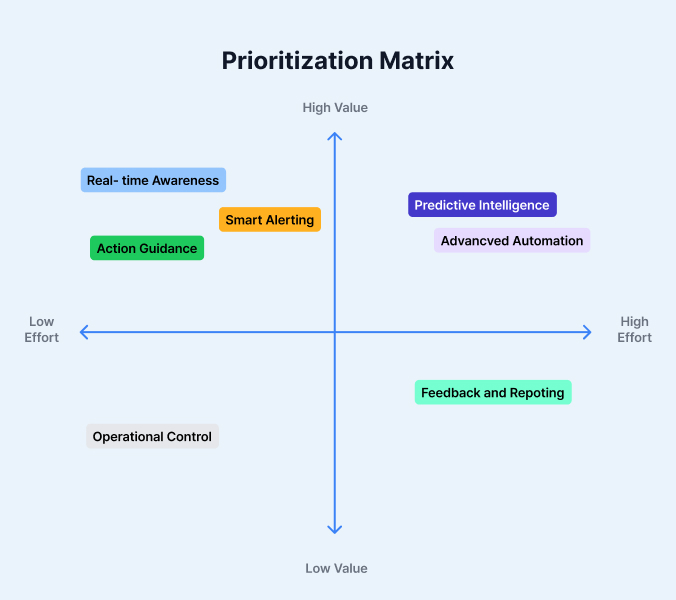
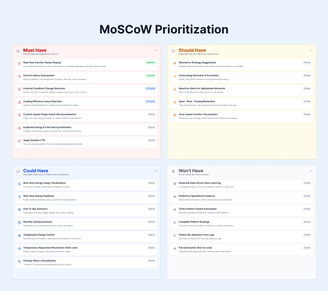
Ideation & User Flow
Using Crazy 8, we explored main screen structures and decided on a flow that integrates judgment, choice, and outcome in a single view.
Comparing multiple layouts, we explored both a structure that split decision information across steps and one that displayed everything at once. Through internal team discussion, we initially determined that showing judgment, choice, and outcome simultaneously was better suited for faster decision-making. This was later validated in user testing, where the structure confirmed to genuinely accelerate the decision process.
IA & System Design
Rather than separating decision information from the action, we integrated both into a single continuous flow.
We reduced the steps between reviewing information, interpreting it, and making a selection — designing a structure that leads directly to a choice.
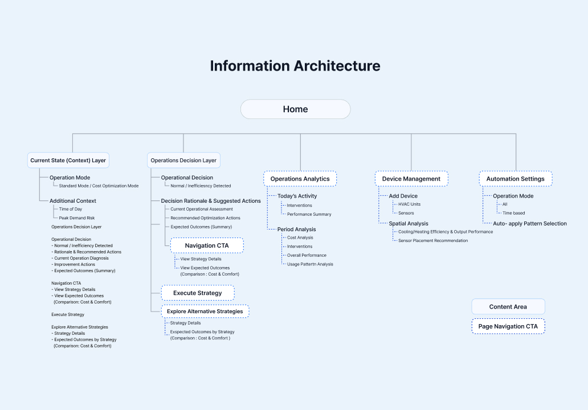
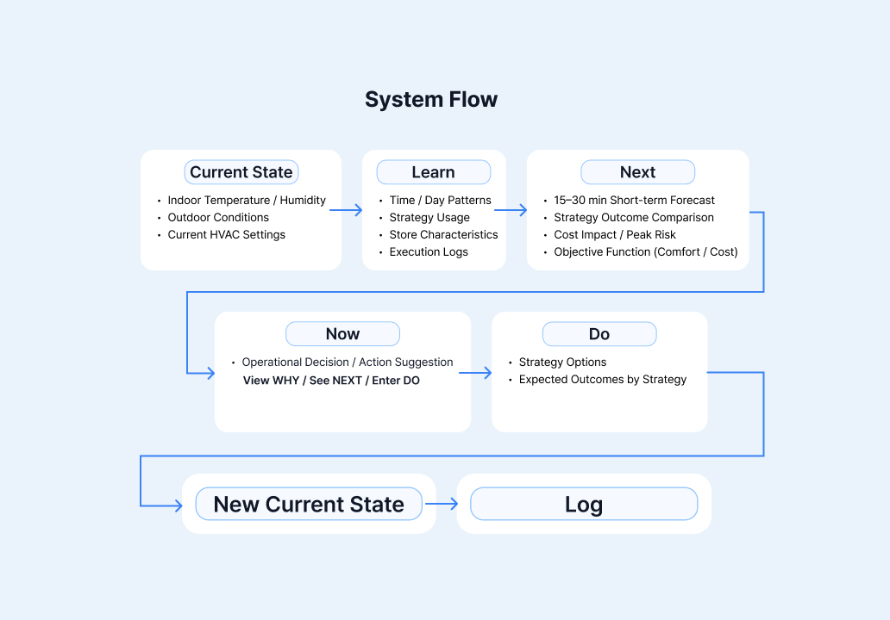
Wireframe & Design System
Status, outcomes, and choices were integrated into a single screen — enabling immediate judgment and selection.
The wireframe was structured so that current status (temperature and humidity), expected outcomes (comfort and cost), and available options (mode and settings) could all be viewed and acted on from a single screen.
The design system was built around information hierarchy and comparative structure — to support fast judgment without friction. To allow users to quickly distinguish decision-critical information, we clearly separated status, outcome, and choice — and applied a numeric + delta-based display format for intuitive comparison. Color and typography were used to distinguish current status, recommended choice, and expected outcome — so users could understand at a glance, without interpretation.
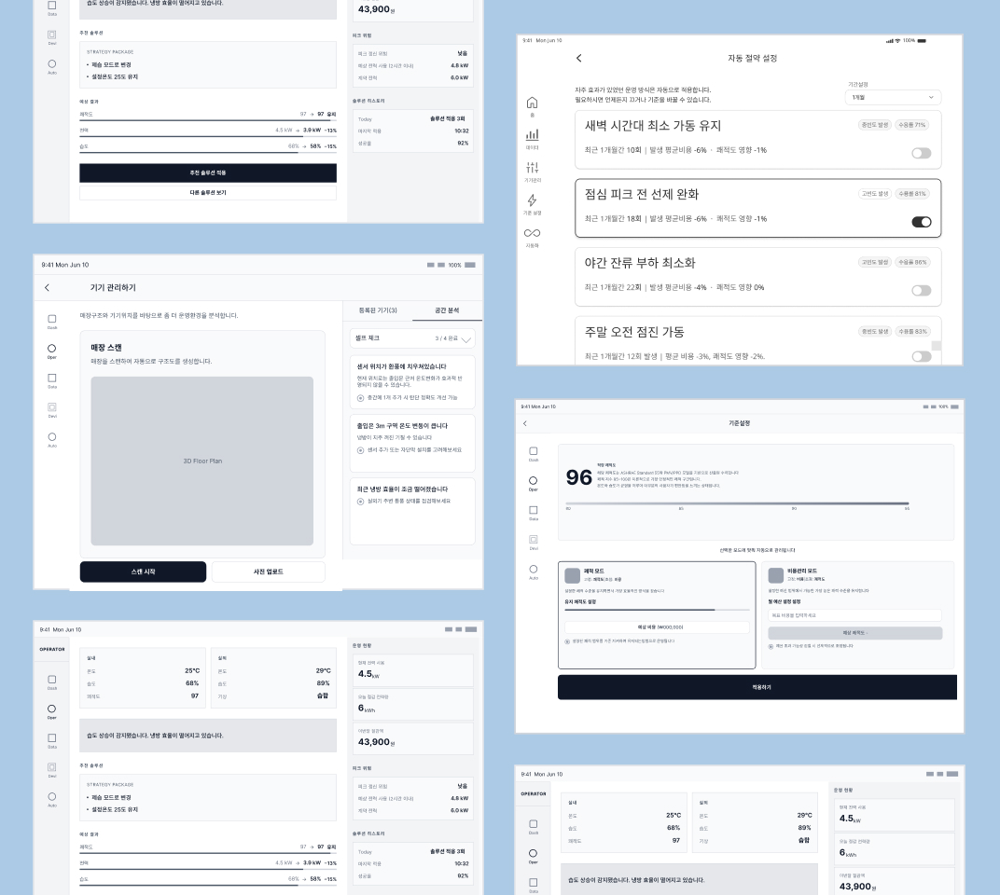
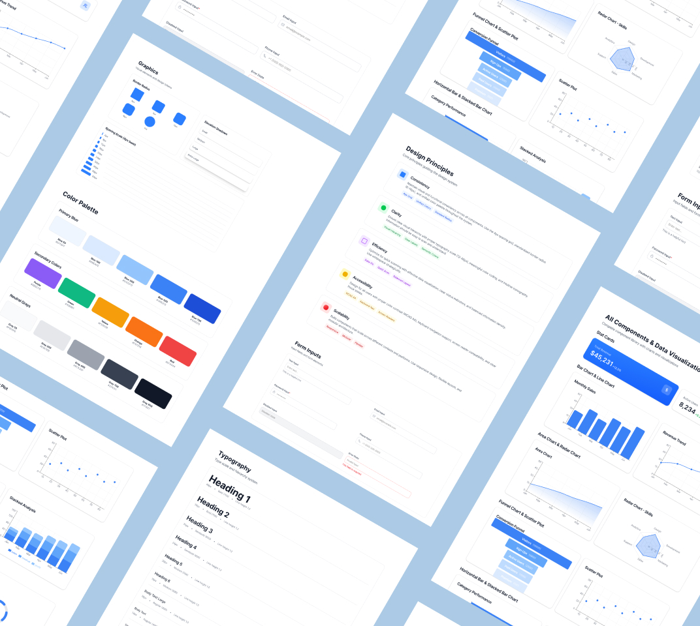
Solution
Key Features
Three Features That Replace Repeated Adjustments with a Single Judgment


FEATURE 01
One Screen Decision
HVAC status, expected outcomes (comfort and cost), and available choices are integrated into a single screen → Select immediately without interpreting data → Replace repeated adjustments with a single judgment

FEATURE 02
Data Log
HVAC adjustment history and outcomes are recorded and visualized together → Build up a record of what each choice produced → Make decisions based on data, not intuition

FEATURE 03
Mode Setup
Set HVAC criteria by time of day and situation in advance → Automate recurring decisions → A structure that doesn't require making the same choice over and over
Outcome
We designed a UT protocol to validate the HVAC decision-making flow
We designed a UT protocol based on scenarios reflecting real store operations, to observe how users judge and select HVAC options. The protocol tracked three key metrics: decision speed, comprehension of the proposed choice, and confusion during the selection process — recording behavior and decision-making at each step.
76
SUS score — confirming usability above the acceptable threshold.
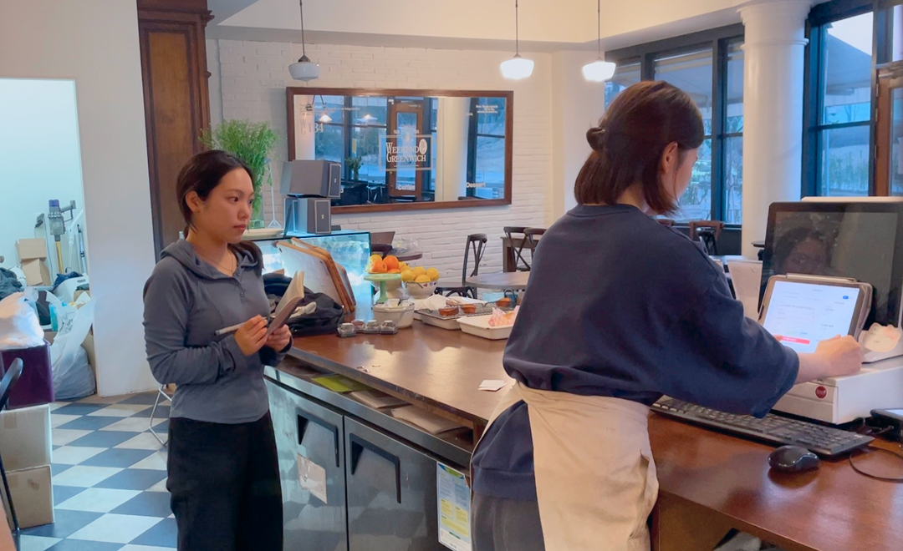
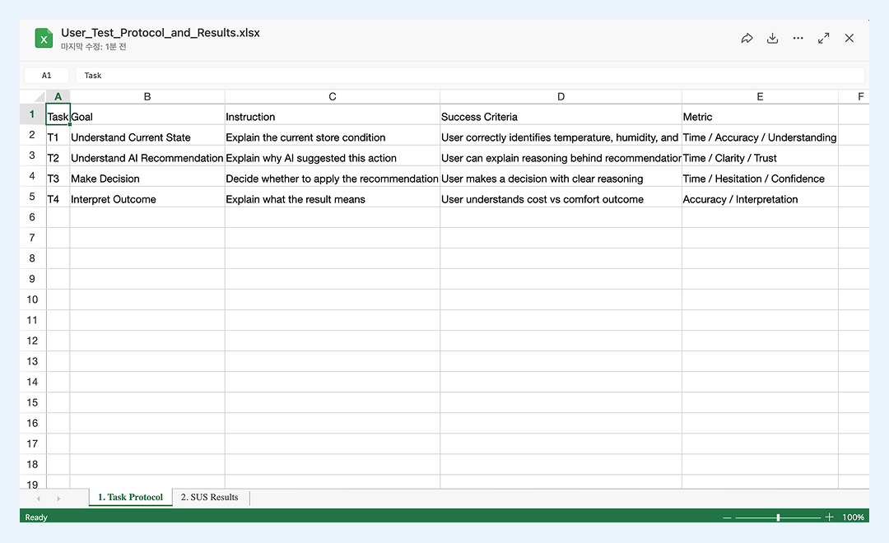
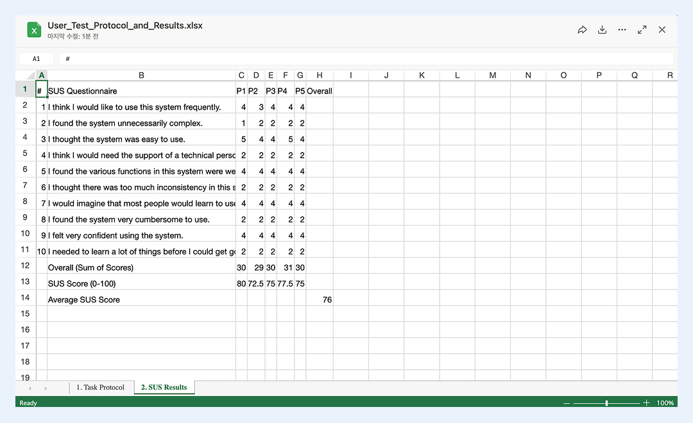
Users shifted from a pattern of adjusting and checking to making a single judgment and selecting
Testing showed that users no longer made multiple adjustments as before — instead, they reviewed the proposed choice directly and made a decision. Hesitation during the judgment process decreased, and confidence in selections increased. The SUS score of 76 confirmed usability above the acceptable threshold.
Iteration
Insight & Iteration
Testing Showed Where the Structure Still Got in the Way
The first version revealed two structural issues — both about flow. Places where small business owners had to break their thinking to navigate the interface.
Iteration 01
To keep the judgment flow intact, we reduced screen transitions and consolidated actions into a single context
In the original structure, completing a single decision required navigating across multiple screens — breaking the judgment flow in the process. To fix this, we consolidated related actions into a single screen so the decision process could flow without interruption.
Iteration 02
We moved the 'outcome' — what users look for first — to the top of the screen
In the initial layout, expected outcomes (comfort and cost) were placed at the bottom. Testing revealed that users immediately wanted to know 'what will actually happen' upon opening the app. Based on this, we moved outcome information to the top — redesigning the flow so users see the result first, then proceed to make a choice.
Reflection
01
How you define the problem determines every design decision that follows
We initially approached this as an HVAC control problem. Research revealed that the issue wasn't about operation — it was a structure where users couldn't make a judgment about what to do. Shifting that frame redirected us from designing features to designing a judgment flow. What to leave out became clearer than what to build.
02
Data only has meaning when it leads to a decision
Operators already had access to temperature, usage, and cost data. But none of it was connected to the outcome of each choice — making it impossible to use in actual decision-making. This project taught us that the problem wasn't a lack of data, but a structure that failed to link choices to results.
03
Users struggle more with deciding than with acting
Existing systems were designed to let users operate the controls. But in practice, the harder challenge wasn't how to adjust — it was deciding what to choose at all. Understanding this difference shifted our approach: instead of helping users judge, we designed a structure where the system judges first and the user approves.
04
Simplifying the judgment flow matters more than adding features
We could have added more features — but we deliberately removed anything that clouded the judgment flow. By reducing the steps between reviewing information, interpreting it, and selecting, and by integrating status, outcome, and choice into a single screen, we compressed the decision-making process. The result: users could make a choice with a single judgment instead of repeated adjustments.
05
Reducing scope isn't about giving up features — it's about making judgment clearer
In designing the MVP, we chose to include only the features directly needed for decision-making rather than everything possible. The features we cut made the remaining ones clearer in both role and flow — resulting in a structure where users could make faster, more confident decisions.
View other projects
More Projects
No.01

GEME
Co-founded and designed a mobile platform that transforms complex team management and guest matching into clear, actionable experiences.
View Case Study →No.03

BingX
Redesigned the onboarding experience to help users understand AI trading roles and make confident decisions through guided interactions.
View Case Study →No.04

Weekend Greenwich
Led product design and development based on brand identity, creating an offline brand experience that connects directly with real customers.
View Case Study →No.05

Wizzy Bakeshop
Built and operated a dessert brand, designing the full customer experience from product to service in a real business environment.
View Case Study →